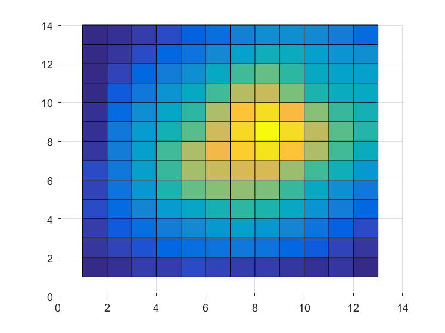
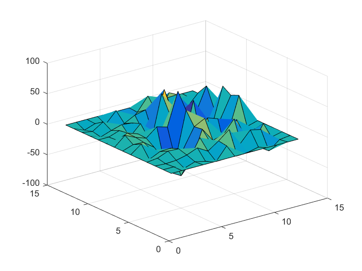

Contents
function [] = filter_signals()
FILTER_SIGNALS
Summary of this function goes here.
- Syntax
[OUTPUTARGS] = FILTER_SIGNALS(INPUTARGS)
- Input
-- INPUTARGS -
- Output
-- OUTPUTARGS -
- Examples:
Provide sample usage code here
- See also:
List related files here
- Author: Dmitrii Leliuhin
- Email: dleliuhin@mail.ru
- Date: 04/04/2019 22:55:53
- Version: 1.0 $
- Requirements: PCWIN64, MatLab R2016a
- Warning:
- Warnings list.
- TODO:
- TODO list.
Code
clc; clear all; close all; y.rows = 14; y.cols = 13; file_name_1 = '../results/rash3.xls'; file_name_2 = '../results/method_1.xls'; mat_origin = zeros(y.rows, y.cols); mat_noise = zeros(y.rows, y.cols); mat_anis_filt = zeros(y.rows, y.cols); mat_diff_anis = zeros(y.rows, y.cols); mat_stat_filt = zeros(y.rows, y.cols); mat_diff_stat = zeros(y.rows, y.cols); xls_range_origin = 'A23:M36'; xls_range_noise = 'A4:M17'; xls_range_1 = 'A21:M34'; xls_range_3 = 'A76:M89'; mat_origin = xlsread(file_name_2, xls_range_origin); mat_noise = xlsread(file_name_1, xls_range_noise); mat_anis_filt = xlsread(file_name_1, xls_range_1); mat_stat_filt = xlsread(file_name_1, xls_range_3); diff_anis = mat_origin - mat_anis_filt; diff_stat = mat_origin - mat_stat_filt; %========================================================================== figure; title('Noised signal 2D.', 'FontSize', 18); surf(mat_noise); view(2); snapnow; saveas(gcf, '../results/2D-view-noised', 'jpg'); figure; title('Noised signal.', 'FontSize', 18); surf(mat_noise) saveas(gcf, '../results/noised', 'jpg'); %========================================================================== %========================================================================== figure; title('Anisotropic filtered signal 2D.', 'FontSize', 18); surf(mat_anis_filt); view(2) snapnow; saveas(gcf, '../results/2D-view-anisotr-filter', 'jpg'); figure; title('Anisotropic filtered signal.', 'FontSize', 18); surf(mat_anis_filt) saveas(gcf, '../results/anisotr-filter', 'jpg'); %========================================================================== figure; title('Anisotropic difference 2D.', 'FontSize', 18); surf(diff_anis); view(2) snapnow; saveas(gcf, '../results/2D-view-anisotr-diff', 'jpg'); figure; title('Anisotropic difference.', 'FontSize', 18); surf(diff_anis) saveas(gcf, '../results/anisotr-diff', 'jpg'); %========================================================================== %========================================================================== figure; title('Statistic filter 2D.', 'FontSize', 18); surf(mat_stat_filt); view(2) snapnow; saveas(gcf, '../results/2D-view-stat-filter', 'jpg'); figure; title('Statistic filter.', 'FontSize', 18); surf(mat_stat_filt) saveas(gcf, '../results/stat-filter', 'jpg'); %========================================================================== figure; title('Statistic difference 2D.', 'FontSize', 18); surf(diff_stat); view(2) snapnow; saveas(gcf, '../results/2D-view-stat-diff', 'jpg'); figure; title('Statistic difference.', 'FontSize', 18); surf(diff_stat) saveas(gcf, '../results/stat-diff', 'jpg'); %========================================================================== save('../results/workspace.mat'); close all; 
end